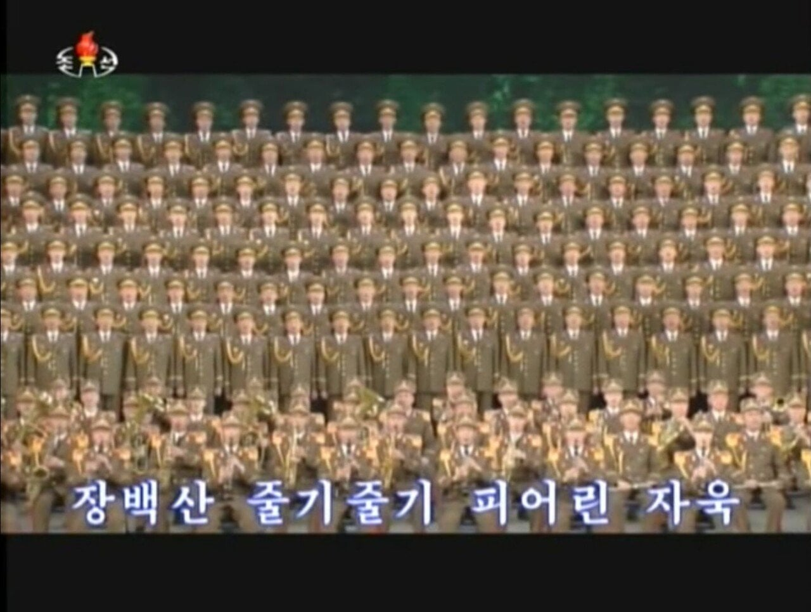
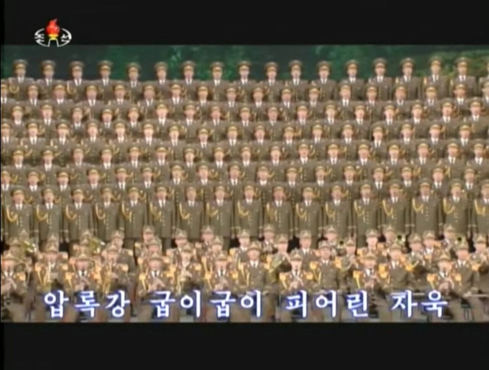

자욱아~
브라운아이드소울 1집 앨범 커버인줄 알았네
띵곡 많지
이건 진짜 맛국노네...
자욱아~~~
맛 좋다
맛자욱이 아니라 북자욱이엿네
간첩 신고는 111
고 김자욱 응원일지도
야 이 맛국노야
야, 이 맛국노 간나야! 설마 주체104(2015)년 7월 21일 새벽에 배우 채수빈 동무가 구자욱 동무와 거리에서 손목을 잡고 걸어다니는 모습이 사진에 찍혀 련애설이 터졌는데, 구자욱 동무는 련애설을 시인하였지만 채수빈 동무는 《맛보기만 한 느낌이라고나 할가? 련애설이란게 이런 기분이로구나.》라고 말하여 구자욱 동무의 명예호칭이 맛자욱이 된 그 사건을 말하는것이냐?
매직아이인줄 알았네
STORM 2북
내 곁을 떠나간 그 사람 이름은
자욱, 자욱, 자욱이였어요
그 사람 어깨엔 날개가 있어
멀리, 멀리, 날아갔어요